Checklist
Introdução
O módulo de “Checklist” consiste em apresentar todas as checklists de tarefas disponíveis para realizar na loja, incluindo as checklists presentes no módulo de “Rotinas de Turno”. Além disso, as tarefas de turno realizadas são mostradas aqui, bem como os desvios (respostas fora do esperado) e plano de ação (ao ter uma resposta fora do esperado, há como adicionar uma proposta para resolução do problema em um campo denominado “plano de ação”).
Qual utilidade deste módulo?
O módulo funciona como uma rotina de verificação no dia a dia da loja. Pode ser utilizado em horários específicos, como por exemplo: pré-pico cozinha, pré-pico drive, pré-pico balcão, sistema de lavagem de mãos etc. Ou em qualquer momento, como os questionários CEV, Segurança Alimentar etc.
Acesso ao Módulo
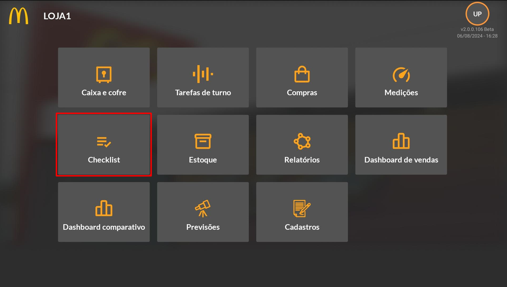Cadastro Checklist – SAP
No módulo de Administração do SAP, na seção denominada “Módulo de Checklist” do BrOne Franquias, é na qual todas as configurações essenciais para a implementação eficaz de checklists no aplicativo são feitas. As checklists padrões do McDonald’s já vêm pré-configuradas no Add-on e para importar os dados para o aplicativo, é imprescindível acionar a função de “Carga Inicial de Checklist”. Assim, as informações das checklists são integradas ao aplicativo dentro do Módulo de Checklist, além disso possibilita a definição de listas de verificação a serem executadas durante as tarefas de turno.
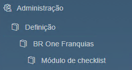Customizar checklist
É possível customizar, alterar ou adicionar novas checklists através das funcionalidades do menu “Módulo de checklist”. As telas de “Perguntas” e “Respostas” são utilizadas para definição padrão das checklists, posteriormente as respostas podem ser agrupadas a fim de criar uma opção de múltipla escolha dentro da checklist na tela de “Grupos de Respostas”.
Para criar um agrupamento de perguntas que serão utilizadas em alguma checklist é utilizada a tela de “Grupo de perguntas”, nesta tela é feito o vínculo das perguntas, opções de múltipla escolha (grupo de respostas) e a resposta esperada.
Além dessas telas, temos as “Tipos de Checklist” e “Checklist”, na qual a primeira define quais serão as categorias de checklist e a segunda realiza o agrupamento das checklists por seus tipos.
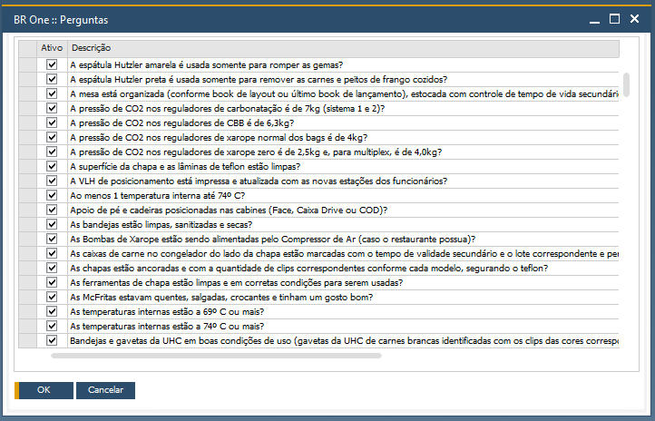Tela “BR One :: Perguntas”
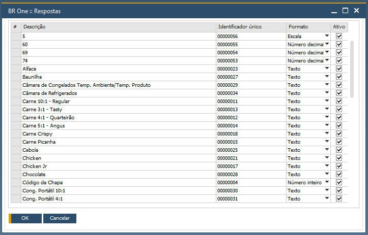Tela “BR One :: Respostas”
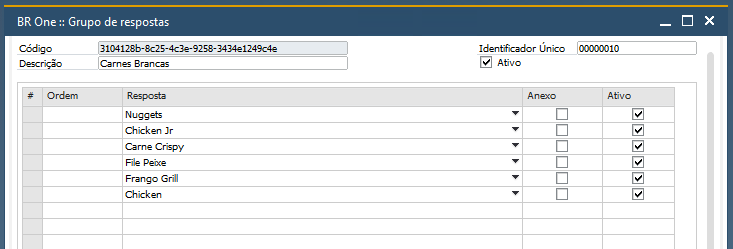Tela “BR One :: Grupo de respostas”
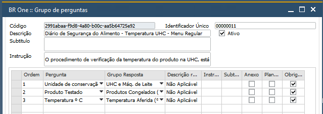Tela “BR One :: Grupo de perguntas”
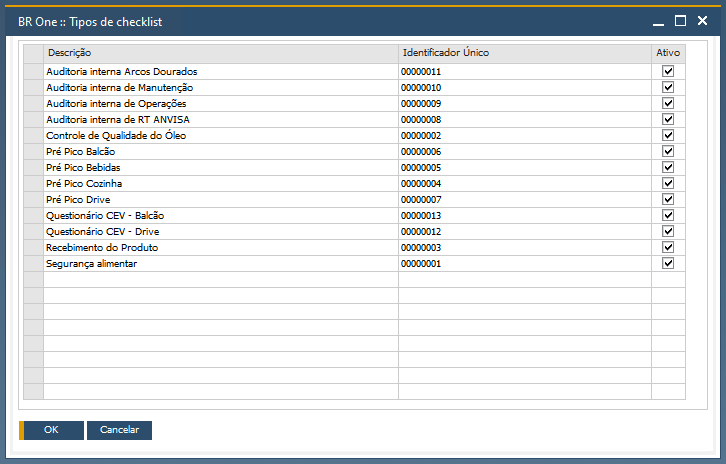Tela “BR One :: Tipos de checklist”
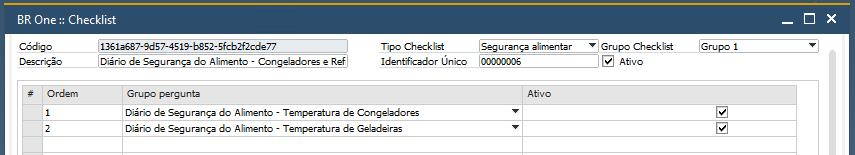Tela “BR One :: Checklist”
Tipos de Checklist – APP
Diário Segurança do Alimento - Break
Diário Segurança do Alimento - Café da Manhã
Diário Segurança do Alimento - Congelados e Resfriados
Diário Segurança do Alimento - Controle de Qualidade do Óleo
Diário Segurança do Alimento - Menu Regular
Diário Segurança do Alimento - Recebimento do Produto
Pré Pico Balcão
Pré Pico Cozinha
Pré Pico Drive
Questionário CEV - Balcão
Questionário CEV - Drive
Segurança Alimentar - Café da Manhã
Segurança Alimentar - Completo
Sistema de Lavagem de Mãos
Exemplo de Checklist – APP

Previstos
Ao abrir o módulo, a tela representada pela imagem abaixo é aberta, no qual é possível visualizar os status de tarefas/questionários realizados e a quantidade de desvios e planos de ações criados, além de mostrar no menu lateral os checklists que podem ser realizados.
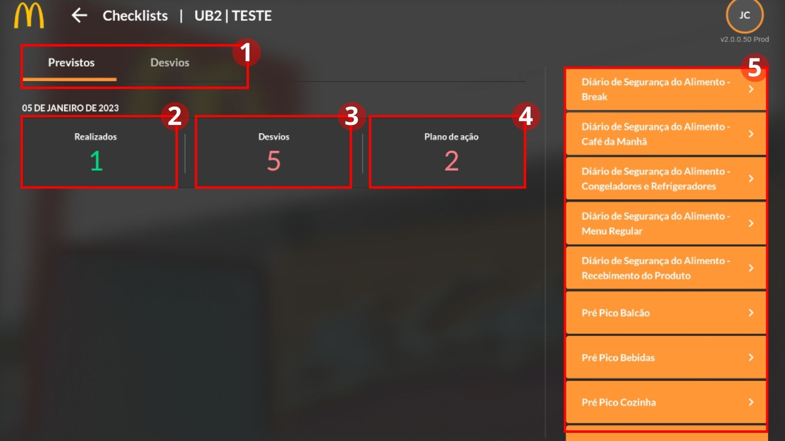A tela contém duas abas: previstos e desvios (1), a primeira aba é aberta por padrão e exibe todas as checklists já preenchidas (2), os desvios encontrados (3) e os planos de ação propostos (4). No canto direito são exibidos todos os questionários disponíveis para preenchimento e uso da loja (5).
Ao concluir uma tarefa de turno (segundo módulo, item 4.2 – Tarefa de Turno), ela aparecerá em Realizados (2), e todos os seus desvios e planos de ações serão exibidos nesta mesma tela. Para ver os detalhes de cada item, clique na aba de Desvios, localizada no topo da tela (1).
Desvios
Esta é tela da aba Desvios que fica ao lado da aba Previstos, aqui são mostradas todas as informações dos desvios criados, possuindo três filtros referentes ao Período (1), Tipo de Desvio (2) e Tipo de Checklist (3).
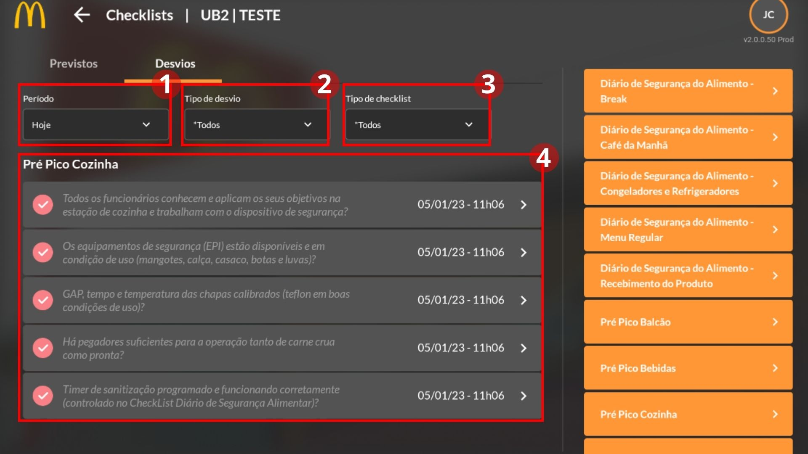É possível clicar sobre cada desvio para ver seus detalhes, no canto aparece a data e o horário que foi realizado o checklist. No filtro por “Tipo de Desvio” (2) é possível selecionar os planos de ações criados para visualizar seus detalhes, como mostrado nas imagens abaixo.
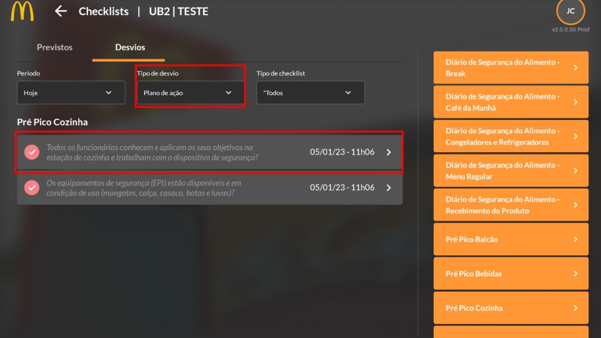 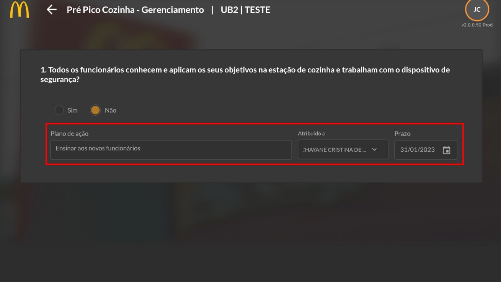